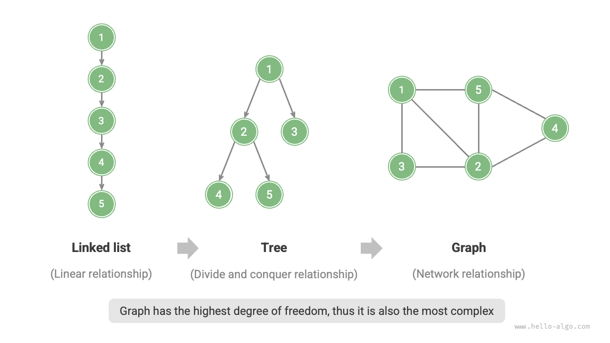
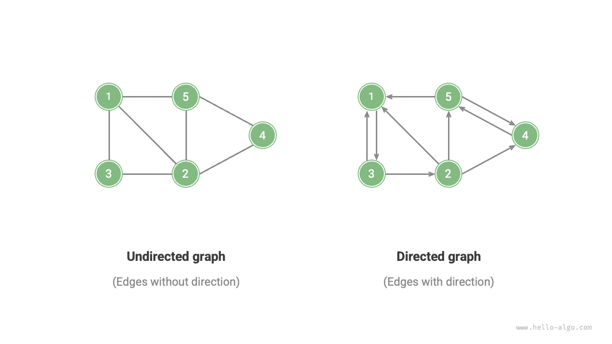
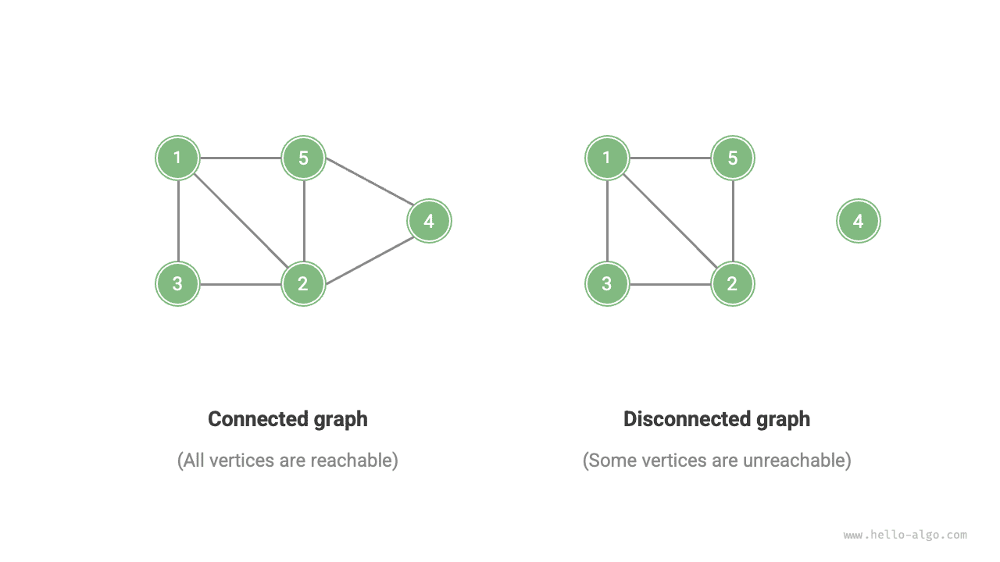
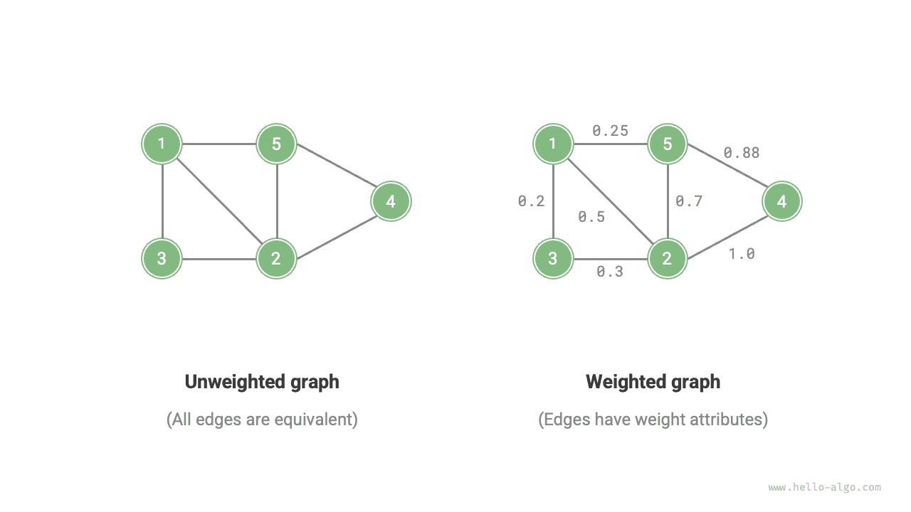
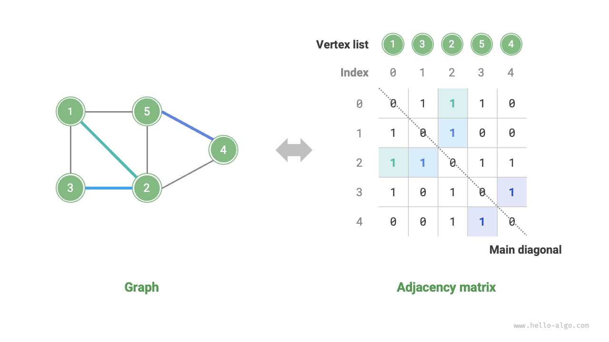
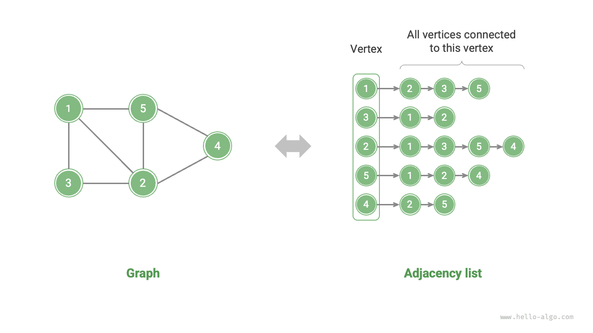

الرسوم البيانية
الرسم البياني
الرسم البياني (graph) بنية بيانات غير خطية تتكوّن من رؤوس (vertices) وأضلاع (edges). ويمكننا تمثيل رسم بياني $G$ تجريدياً بمجموعة من الرؤوس $V$ ومجموعة من الأضلاع $E$. ويعرض المثال التالي رسماً بيانياً يضم 5 رؤوس و7 أضلاع.
$$ \begin{aligned} V & = { 1, 2, 3, 4, 5 } \newline E & = { (1,2), (1,3), (1,5), (2,3), (2,4), (2,5), (4,5) } \newline G & = { V, E } \newline \end{aligned} $$
إذا نظرنا إلى الرؤوس باعتبارها عقداً، وإلى الأضلاع باعتبارها مراجع (مؤشرات) تربطها، أمكننا اعتبار الرسم البياني امتداداً لبنية بيانات القائمة المترابطة. وكما يوضح الشكل أدناه، فمقارنةً بالعلاقات الخطية (القوائم المترابطة) وعلاقات التقسيم والتغلب (الأشجار)، تتمتع العلاقات الشبكية (الرسوم البيانية) بدرجة حرية أعلى، ولذلك فهي أكثر تعقيداً.

الأنواع الشائعة للرسوم البيانية ومصطلحاتها
يمكن تقسيم الرسوم البيانية إلى رسوم بيانية غير موجّهة (undirected graphs) ورسوم بيانية موجّهة (directed graphs) حسب ما إذا كانت الأضلاع لها اتجاه، كما يوضح الشكل أدناه.
- في الرسوم البيانية غير الموجّهة، تمثّل الأضلاع ارتباطاً «ثنائي الاتجاه» بين رأسين، مثل علاقات الصداقة في WeChat أو QQ.
- في الرسوم البيانية الموجّهة، يكون للأضلاع اتجاه، أي أن الضلعين $A \rightarrow B$ و$A \leftarrow B$ مستقلان أحدهما عن الآخر، مثل علاقات المتابعة والمتابعين في Weibo أو TikTok.

ويمكن تقسيم الرسوم البيانية إلى رسوم بيانية متصلة (connected graphs) ورسوم بيانية غير متصلة (disconnected graphs) حسب ما إذا كانت جميع الرؤوس متصلة، كما يوضح الشكل أدناه.
- في الرسوم البيانية المتصلة، يمكن الوصول من أي رأس إلى جميع الرؤوس الأخرى.
- في الرسوم البيانية غير المتصلة، يوجد على الأقل رأس واحد لا يمكن الوصول إليه انطلاقاً من رأس معيّن.

ويمكننا أيضاً إضافة متغير «وزن» إلى الأضلاع، للحصول على رسوم بيانية موزونة (weighted graphs) كما يوضح الشكل أدناه. فمثلاً، في ألعاب الهاتف مثل «Honor of Kings»، يحسب النظام «مستوى الألفة» بين اللاعبين استناداً إلى مدة لعبهم معاً، ويمكن تمثيل شبكات الألفة هذه باستخدام رسوم بيانية موزونة.

وتشمل بنية بيانات الرسم البياني المصطلحات الشائعة التالية.
- التجاور (adjacency): عندما يتصل رأسان بضلع، يُقال إن هذين الرأسين «متجاوران». وفي الشكل أعلاه، الرؤوس المجاورة للرأس 1 هي الرؤوس 2 و3 و5.
- المسار (path): تُسمى سلسلة الأضلاع من الرأس A إلى الرأس B «مساراً» من A إلى B. وفي الشكل أعلاه، سلسلة الأضلاع 1-5-2-4 مسار من الرأس 1 إلى الرأس 4.
- الدرجة (degree): عدد الأضلاع المرتبطة بالرأس. وفي الرسوم البيانية الموجّهة، تشير الدرجة الداخلية (in-degree) إلى عدد الأضلاع المتجهة إلى الرأس، وتشير الدرجة الخارجية (out-degree) إلى عدد الأضلاع الخارجة من الرأس.
تمثيل الرسوم البيانية
تشمل الطرق الشائعة لتمثيل الرسوم البيانية «مصفوفة التجاور» و«قائمة التجاور». ويُستخدم فيما يلي الرسوم البيانية غير الموجّهة أمثلةً على ذلك.
مصفوفة التجاور
بمعطى رسم بياني فيه $n$ من الرؤوس، تستخدم مصفوفة التجاور (adjacency matrix) مصفوفة بحجم $n \times n$ لتمثيل الرسم البياني، حيث يمثّل كل صف (عمود) رأساً، وتمثّل عناصر المصفوفة الأضلاع، باستخدام $1$ أو $0$ للإشارة إلى وجود ضلع بين رأسين أو عدم وجوده.
وكما يوضح الشكل أدناه، لتكن مصفوفة التجاور $M$ وقائمة الرؤوس $V$. عندئذ يشير عنصر المصفوفة $M[i, j] = 1$ إلى وجود ضلع بين الرأس $V[i]$ والرأس $V[j]$، بينما يشير $M[i, j] = 0$ إلى عدم وجود ضلع بين الرأسين.

ولمصفوفات التجاور الخصائص التالية.
- في الرسوم البيانية البسيطة، لا يمكن للرؤوس الاتصال بأنفسها، لذا تكون العناصر الواقعة على القطر الرئيسي لمصفوفة التجاور بلا معنى.
- في الرسوم البيانية غير الموجّهة، يتكافأ الضلعان في الاتجاهين، لذا تكون مصفوفة التجاور متناظرة حول القطر الرئيسي.
- استبدال القيمتين $1$ و$0$ في مصفوفة التجاور بأوزان يتيح لها تمثيل الرسوم البيانية الموزونة.
وعند استخدام مصفوفات التجاور لتمثيل الرسوم البيانية، يمكننا الوصول مباشرةً إلى عناصر المصفوفة للحصول على الأضلاع، مما يجعل عمليات الإضافة والحذف والبحث والتعديل فعّالة للغاية، بتعقيد زمني $O(1)$ في جميعها. غير أن التعقيد المكاني للمصفوفة هو $O(n^2)$، وهو ما يستهلك ذاكرة كبيرة.
قائمة التجاور
تستخدم قائمة التجاور (adjacency list) عدداً $n$ من القوائم المترابطة لتمثيل رسم بياني، حيث تمثّل عقد القوائم المترابطة الرؤوس. وتقابل القائمة المترابطة رقم $i$ الرأس $i$، وتخزّن جميع الرؤوس المجاورة لذلك الرأس (أي الرؤوس المتصلة به). ويعرض الشكل أدناه مثالاً على رسم بياني مخزّن باستخدام قائمة تجاور.

تخزّن قوائم التجاور الأضلاع الموجودة فعلاً فقط، ويكون العدد الإجمالي للأضلاع عادةً أقل بكثير من $n^2$، مما يجعلها أكثر كفاءة في استهلاك المساحة. غير أن البحث عن الأضلاع في قائمة التجاور يتطلب اجتياز القائمة المترابطة، لذا فهي أقل كفاءة زمنياً من مصفوفة التجاور.
وكما يوضح الشكل أعلاه، فإن بنية قوائم التجاور تشبه كثيراً أسلوب السلسلة المنفصلة في جداول التجزئة، لذا يمكننا استخدام طرق مشابهة لتحسين الكفاءة. فمثلاً، عندما تطول قائمة مترابطة، يمكن تحويلها إلى شجرة AVL أو شجرة حمراء سوداء، مما يحسّن التعقيد الزمني من $O(n)$ إلى $O(\log n)$؛ ويمكن أيضاً تحويلها إلى جدول تجزئة، مما يقلّل التعقيد الزمني إلى $O(1)$.
التطبيقات الشائعة للرسوم البيانية
كما يوضح الجدول أدناه، يمكن نمذجة كثير من الأنظمة الواقعية باستخدام الرسوم البيانية، ويمكن اختزال المسائل المقابلة إلى مسائل حسابية على الرسوم البيانية.
جدول
| الرؤوس | الأضلاع | مسألة حسابية على الرسم البياني | |
|---|---|---|---|
| الشبكة الاجتماعية | المستخدمون | علاقات الصداقة | اقتراح أصدقاء محتملين |
| خطوط المترو | المحطات | الاتصال بين المحطات | اقتراح أقصر مسار |
| المجموعة الشمسية | الأجرام السماوية | قوى الجذب بين الأجرام السماوية | حساب مدارات الكواكب |